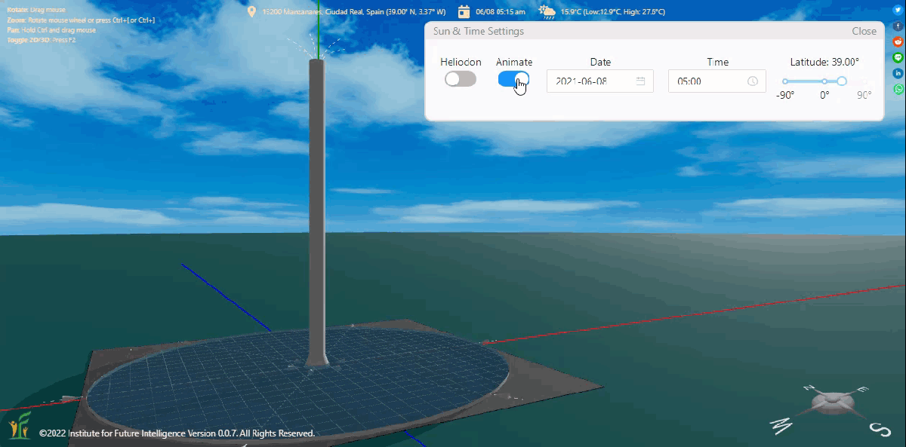
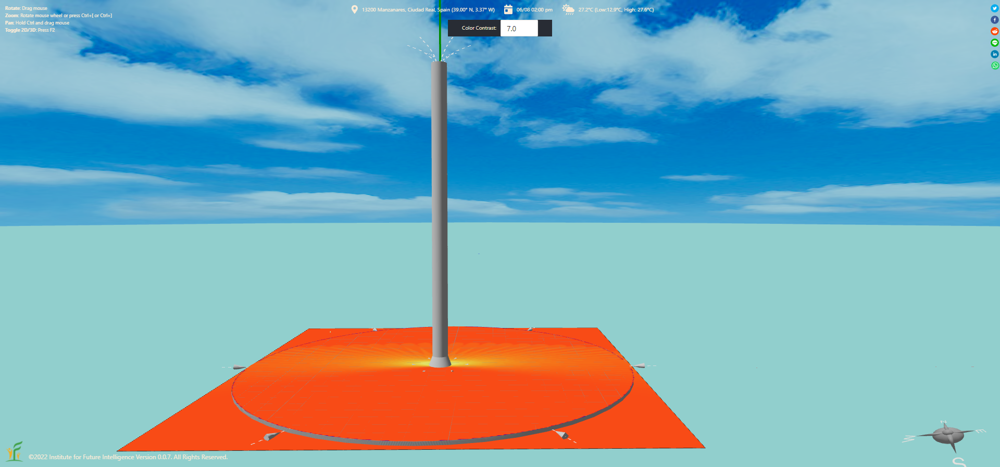
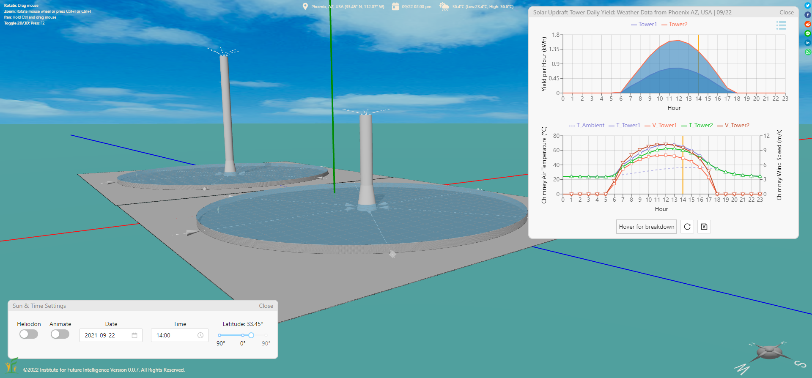
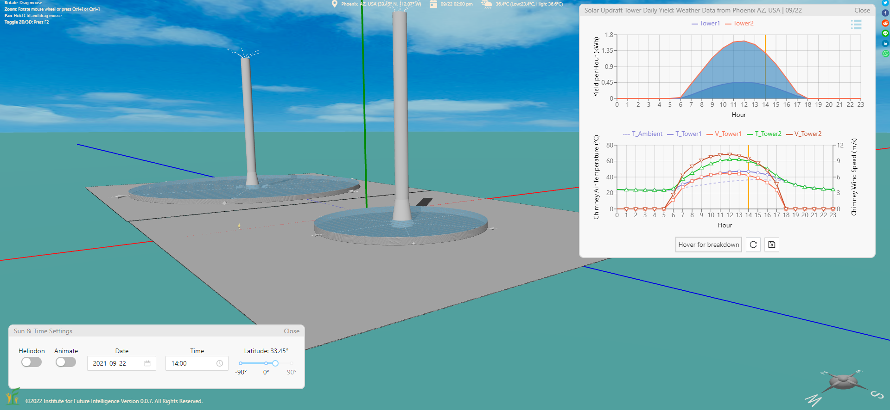
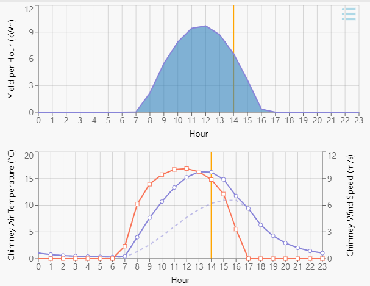
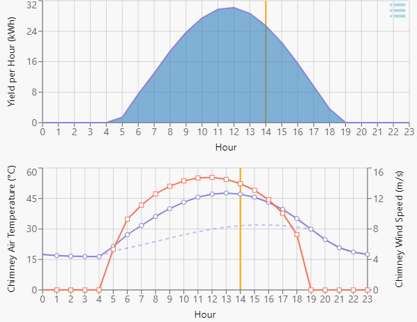
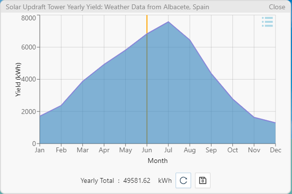
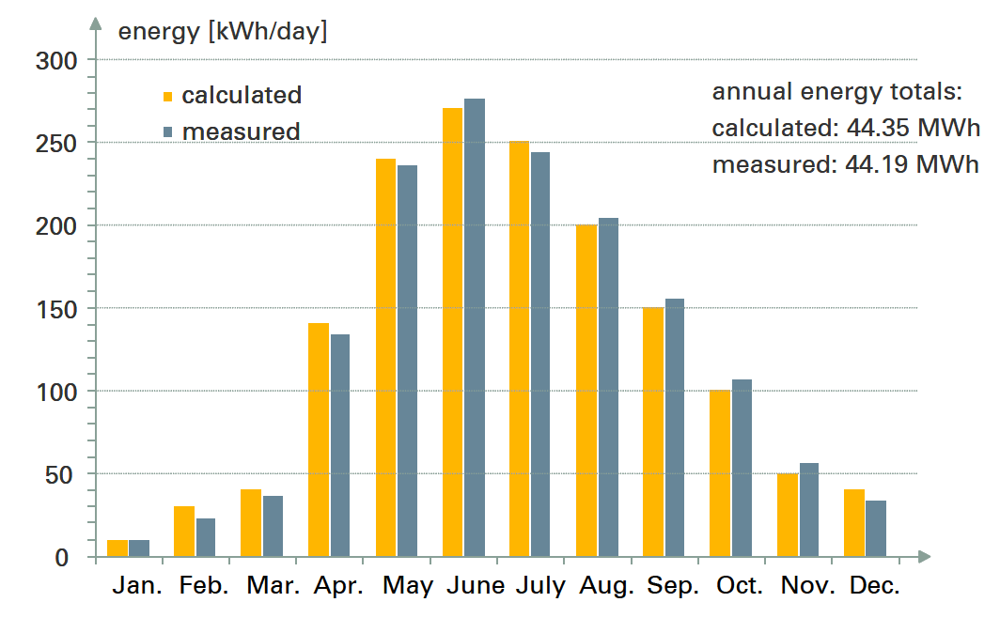
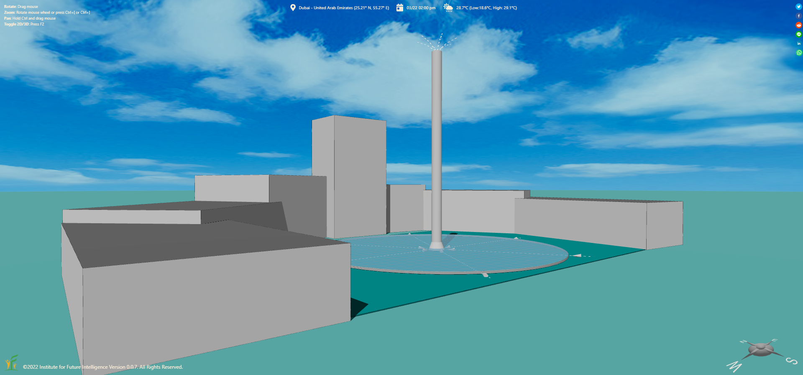

Modeling and Designing Solar Updraft Towers in Aladdin
By Charles Xie ✉
Listen to a podcast about this article
In addition to photovoltaic and concentrated solar power, Aladdin can also be used to model and design other types of solar power. In this article, I will show you how you can model solar updraft towers (not to be confused with smaller solar chimneys used in green buildings). A solar updraft tower uses rising hot air heated by solar energy to drive a turbine to generate electricity. If air is heated through an airtight collector (like a giant greenhouse) and vented via a tall chimney, this kind of solar power plant can generate considerable electricity while preventing dust storms if it is built in a desert or controlling microclimate if it is built in a city. For example, solar updraft towers may reduce urban heat islands or improve air quality by accelerating the air flow in a city — while quietly generating clean electricity to power the city. An Aladdin model of several solar updraft towers is embedded as follows for you to see how they look like. These models do not contain details such as the turbine engines at the inlet of the chimney and the supporting structures under the collector roof.
Live model above (view in full screen)
The design of a solar updraft tower involves deciding the size and height of the collector (greenhouse), as well as the size and height of the chimney. Both the collector and the chimney are assumed to be roundish by default, but they can take any shape to fit the landscape. In the future, we are interested in integrating this kind of green energy solutions into architectual and urban design and simulation. For now, let's examine these simple design factors first without considering the integration with architecture.
Animating the operation of a solar updraft tower
First of all, let's see how a solar updraft tower works during a day through an animation. A solar updraft tower requires no additional power source except the sun. When the sun is out, cool air is drawn into the collector from its edge inlets, warmed up within it, and vented through a chimney (which is usually positioned at the center of the collector). This flow of air continues until the sun sets (even after that if there is enough thermal mass inside the collector to hold the heat longer into the evening). This air flow is visualized below as streamlines.

Animating the daily operation of a solar updraft tower
During the day, the chimney inevitably casts a long shadow that sweeps across the top surface of the collector as the sun moves across the sky, reducing the energy input as shown in the following heatmap.

A heatmap on the collector showing the shadowing effect of the chimney
The effect of the chimney height
The following Aladdin model has two towers that have identical collector size but different chimney heights. The movement of air through a chimney is known as the stack effect. The generated wind speed is roughly described by the following formula:
v = √[2gH(Ti/T0-1)]
where v is the wind speed (the rate of the air flow), g is the gravitational acceleration, H is the height of the chimney, Ti is the air temperature at the inlet of the chimney, and T0 is the ambient air temperature outside the collector. This relationship suggests that the taller the chimney is, the more electricity the power plant generates. This is the reason why chimneys taller than or close to 1,000 meters have been proposed according to Wikipedia. In comparison, Burj Khalifa in Dubai, currently the tallest building in the world, has a height of 828 meters (2,717 feet).

The effect of the chimney height
Click HERE to view and edit the above model
The effect of the collector size
A larger collector provides more energy to build up air pressure that drives the stack effect. The simulation in Aladdin also takes into account of the heat losses due to thermal convection and radiation from the roof surface of the collector so that a larger collector also loses more energy through heat transfer processes. The following model has two towers that have identical chimney height but different collector sizes.

The effect of the collector radius
Click HERE to view and edit the above model
Discussion
It is interesting to note that, despite the fact the ambient air temperature usually reaches the peak in the afteroon, the maximum power output may actually occur before or around noon. This is because the air outside the collector is still cool in the late morning, resulting in a greater temperature difference between the inside and outside air and hence a stronger stack effect. In addition, while the ambient air temperature approaches the peak in the afternoon, the solar irradiance starts to decrease from the peak at noon. This is shown in the images below where the hourly energy outputs, the inside and outside air temperatures, and the wind speed at the chimney inlet are plotted. The dashed line represents the ambient temperature outside the collector.


The simulation results for the Manzanares Solar Updraft Tower on January, 8 and July, 8
How accurate is an Aladdin simulation of a solar updraft tower? The following two images compare the yearly outputs predicted by Aladdin and the outputs measured at the Manzanares Solar Updraft Tower in Spain (which has been decommissioned). Note that the yearly output graph in Aladdin shows the monthly totals, whereas the measured results show the average daily totals of the months (we just need to multiply them by 30 or so to get the monthly totals). The measured data are from a report by Schlaich Bergermann Solar GmbH in Stuttgart, Germany.


The yearly outputs of the Manzanares Solar Updraft Tower as predicted by Aladdin and measured on site
Let's conclude this article by imagining how a solar power tower can be integrated into a city square.

The future: solar updraft towers in cities?